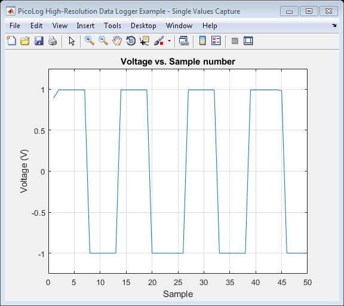

PicoLog High-Resolution Data Logger Series Single Value Example
This script demonstrates how to:
- Open a connection to a PicoLog High-Resolution Data Logger
- Display unit information
- Take readings
- Plot data
- Close the connection to the unit
Please refer to the ADC-20/ADC-24 High-Resolution Data Logger's Guide for further information. This file can be edited to suit application requirements.
Copyright: © 2016-2018 Pico Technology Ltd. See LICENSE file for terms.
Contents
- Clear console and close any open figure windows
- Load configuration information
- Define any variables to be used throughout the script
- Load shared library
- Open a connection
- Display unit information
- Set mains noise rejection to 50 Hz
- Get minimum and maximum ADC counts available for the channel
- Get single value
- Plot the data
- Close the connection
- Unload the library
Clear console and close any open figure windows
clc;
close all;
Load configuration information
PicoHRDLConfig;
Define any variables to be used throughout the script
hasDigitalPorts = PicoConstants.FALSE;
Load shared library
% Indentify architecture and obtain function handle for the correct % prototype file. archStr = computer('arch'); picoHRDLMFile = str2func(strcat('picohrdlMFile_', archStr)); if (~libisloaded('picohrdl')) if ismac() [picohrdlNotFound, picohrdlWarnings] = loadlibrary('libpicohrdl.dylib', picoHRDLMFile, 'alias', 'picohrdl'); % Check if the library is loaded if ~libisloaded('picohrdl') error('PicoHRDLGetSingleValueExample:LibaryNotLoaded', 'Library libpicohrdl.dylib not loaded.'); end elseif isunix() [picohrdlNotFound, picohrdlWarnings] = loadlibrary('libpicohrdl.so', picoHRDLMFile, 'alias', 'picohrdl'); % Check if the library is loaded if ~libisloaded('picohrdl') error('PicoHRDLGetSingleValueExample:LibaryNotLoaded', 'Library libpicohrdl.so not loaded.'); end elseif ispc() [picohrdlNotFound, picohrdlWarnings] = loadlibrary('picohrdl.dll', picoHRDLMFile); % Check if the library is loaded if ~libisloaded('picohrdl') error('PicoHRDLGetSingleValueExample:LibaryNotLoaded', 'Library picohrdl.dll not loaded.'); end else error('PicoHRDLGetSingleValueExample:OSNotSupported', 'Operating system not supported, please contact support@picotech.com'); end end
Open a connection
hrdlHandle = calllib('picohrdl', 'HRDLOpenUnit'); hrdlHandle = int16(hrdlHandle); if (hrdlHandle >= 1) fprintf('Device handle: %d\n', hrdlHandle); elseif (hrdlHandle == 0) error('PicoHRDLGetSingleValueExample:UnitNotFound', 'No device found.'); else error('PicoHRDLGetSingleValueExample:FailedToOpen', 'Failed to open device.'); end
Device handle: 16384
Display unit information
infoString = blanks(100); status.getInfo = zeros(7, 1, 'int16'); fprintf('\nUnit information:-\n\n'); information = {'Driver version: ', 'USB Version: ', 'Hardware version: ', 'Variant: ', 'Batch/Serial: ', 'Cal. date: ', 'Kernel driver version: '}; for i = 0:(length(information) - 1) [status.getInfo(i + 1, 1), infoString1] = calllib('picohrdl', 'HRDLGetUnitInfo', hrdlHandle, infoString, int16(length(infoString)), int16(i)); disp([information{i + 1} infoString1]); % Only the ADC-24 has digital ports if (i == PicoStatus.PICO_VARIANT_INFO) if (infoString1 == PicoHRDLConstants.MODEL_ADC_24) hasDigitalPorts = PicoConstants.TRUE; else hasDigitalPorts = PicoConstants.FALSE; end end end fprintf('\n');
Unit information:- Driver version: 2.0.0.459 USB Version: USB 1.1 Hardware version: 1 Variant: 24 Batch/Serial: EP207/010 Cal. date: 02Nov16 Kernel driver version: PICOPP.SYS V1.0
Set mains noise rejection to 50 Hz
[status.setMains] = calllib('picohrdl', 'HRDLSetMains', hrdlHandle, int16(PicoHRDLConstants.MAINS_50_HZ));
Get minimum and maximum ADC counts available for the channel
minAdcPtr = libpointer('int32Ptr', 0); maxAdcPtr = libpointer('int32Ptr', 0) ; channel = picohrdlEnuminfo.enHRDLInputs.HRDL_ANALOG_IN_CHANNEL_1; [status.getMinMaxAdcCounts] = calllib('picohrdl', 'HRDLGetMinMaxAdcCounts', hrdlHandle, ... minAdcPtr, maxAdcPtr, int16(channel)); minAdc = minAdcPtr.Value; maxAdc = double(maxAdcPtr.Value);
Get single value
range = picohrdlEnuminfo.enHRDLRange.HRDL_1250_MV; conversionTime = picohrdlEnuminfo.enHRDLConversionTime.HRDL_60MS; singleEnded = PicoConstants.TRUE; overflowPtr = libpointer('int16Ptr', 0); valuePtr = libpointer('int32Ptr', 0); numReadings = 50; readings = zeros(numReadings, 1); disp('Starting data collection...'); for i = 1:length(readings) [status.getSingleValue] = calllib('picohrdl', 'HRDLGetSingleValue', hrdlHandle, int16(channel), int16(range), int16(conversionTime), ... int16(singleEnded), overflowPtr, valuePtr); overflow = overflowPtr.Value; value = double(valuePtr.Value); % Raw ADC Count % Convert value to volts [readings(i, 1), vMax] = picohrdladc2volts(value, range, maxAdc); pause(0.1); % Wait 100 ms end disp('Data collection complete.');
Starting data collection... Data collection complete.
Plot the data
figure1 = figure('Name','PicoLog High-Resolution Data Logger Example - Single Values Capture', 'NumberTitle','off'); axes1 = axes('Parent', figure1); samples = (1:length(readings)); plot(axes1, samples, readings); title(axes1, 'Voltage vs. Sample number') xlabel(axes1, 'Sample'); ylabel(axes1, 'Voltage (V)'); ylim(axes1, [-vMax vMax]); grid(axes1, 'on');
Close the connection
status.closeUnit = calllib('picohrdl', 'HRDLCloseUnit', hrdlHandle);
Unload the library
if (libisloaded('picohrdl')) unloadlibrary('picohrdl'); end